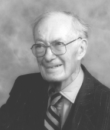

Please note: the AAS Obituaries are temporarily being hosted on this website while their full content is being ingested into the PubPub publishing platform newly adopted by the Bulletin of the American Astronomical Society. When the migration is complete, your existing links will take you to the final, migrated content. Contact peter.williams@aas.org with any questions.
Kenneth Osborne Wright (1911-2002)
Kenneth Osborne Wright died of the effects of Parkinson's disease on 25 July 2002, nearly nine months after celebrating his ninetieth birthday. He was born in Fort George, British Columbia, Canada, to Charles Melville and Agnes Pearl née Osborne Wright on 1 November 1911. His father was a minister. Ken spent almost all his life and virtually all his professional career in his native province. His student years, however, were spent at the University of Toronto. He graduated with a BA in 1933, winning the Gold Medal awarded by the Royal Astronomical Society of Canada (RASC) for the best student in the graduating astronomy class. Ken earned an MA in Astronomy in 1934, also at Toronto. During the academic year 1934–1935, Ken was an astronomical assistant at the University of Toronto. During the following academic year he held a similar post in the University of Michigan. In 1936, Ken returned to British Columbia to take up a full-time appointment on the staff of the Dominion Astrophysical Observatory (DAO) in Victoria. He was awarded a PhD from the University of Michigan in 1940 for a dissertation based on his research at DAO. Except for short absences at the University of Toronto (1960–1961), Mount Wilson and Palomar Observatories (1962) and Amherst-Mount Holyoke Colleges (1962), Ken remained at the DAO until he reached the then mandatory retirement age of 65 in 1976. For the last ten years of that period, he was the DAO’s director. Precluded from active war service by a defect in one eye, Ken also served as a lecturer at the University of British Columbia in Vancouver during 1943 and 1944.
When Ken arrived at the DAO in 1936, virtually all work there was stellar spectroscopy (carried out, of course, with photographic plates) and, particularly, studies of spectroscopic binaries. Ken's dominant interest, the structure and chemical abundances of stellar atmospheres, fitted well with the Observatory programs. From early days he engaged in curve-of-growth analyses of stellar spectra. This naturally led him to consider the precision with which line intensities could be measured on stellar spectra—a topic ideally suited to his temperament. While, on his own admission, Ken could sometimes be hasty and hot-tempered with colleagues, for stars and spectrograms he had almost endless patience. Few of us took as much care as he did in focusing the spectrograph at the beginning of the night and even fewer were prepared to spend all night, and sometimes even two or three consecutive nights, to obtain just one plate. Nevertheless, with the early spectrographs in Victoria, that was often the only way to record as far as possible into the ultraviolet.
The conversion of a photographic record into an intensity trace must seem arcane to those who have grown up with solid-state linear detectors, to say nothing of computers. In the old days, spectrogram reduction required two stages; for each stage there was an instrument—a microphotometer and an intensitometer. Each of these instruments at Victoria had been designed by C. S. Beals, but Ken was probably their most frequent and most skilled user. Drawing the continuum for a late-type spectrum was a challenge in itself and, finally, when the intensity trace was complete, the measurements had to be made. Ken was frequently to be found on his knees, carefully examining a tracing that stretched the entire length of the corridor outside his office! Ken’s dedication to this field was recognized by his peers when they elected him, in 1952, as president of IAU Sub-Commission 29b on Standard Line Intensities in Stellar Spectra. He served in that role for twelve years.
The climax of this work, and the fruit of Ken's efforts in Commission 29b, was a paper published in 1963, in the DAO Publications, which Ken wrote with the assistance of E. K. Lee and T. V. Jacobson and the collaboration of his friend J. L. Greenstein. Although modern detectors, with their high signal-to-noise ratios, and our improved theoretical knowledge of stellar atmospheres have greatly increased our ability to interpret the data, this paper stands as one of the most comprehensive discussions available of the variations of line intensities with spectral type along the main sequence. A second paper with T.V. Jacobson, published a little later, also considered the variations of line-intensity ratios with luminosity class in spectra of late types.
Another area of interest for Ken was that of long-period eclipsing binaries containing a supergiant component. Almost everyone at the DAO in the 1950s participated in the observation of these systems but Ken was the one who continued the work and made it especially his own. This was partly because the premature deaths of Andrew McKellar and Robert Petrie left him as the last active observer of the group that initiated the program, but study of these systems was also suited to his particular kind of patience. Few people are prepared, these days, to invest a lot of time in intensive observation of a prolonged eclipse, only to have to wait years before being able to repeat the observations. Of course, Ken's principal interest was in the atmospheric phases of the eclipses, when the light of the early-type companion acts as a probe, revealing the structure of the supergiant atmosphere. However, a by-product of his work was orbital elements of several of the brighter systems of this type. In particular, his orbital elements for VV Cephei remain the best available.
Ken was made assistant director of the DAO in 1960, after the early but not unexpected death of Andrew McKellar. He became director in 1966, after the sudden death of Robert M. Petrie. Naturally, there was less time for scientific research in his new position. It was his misfortune to be plunged into a senior administrative position at the time of considerable division within the Canadian astronomical community over the location of a proposed major new instrument. This division eventually led to the cancellation of the project amid fears, in some quarters, that Canadian astronomers would be denied access to large telescopes. Ken's persistence in supporting the efforts of G. J. Odgers to find alternative projects was a major factor in the eventual Canadian participation in the CFH Telescope, and thus, indirectly, in the other large-telescope projects in which Canadian astronomers are now involved. The difficulty of those times was increased for him by the illness and death, in 1969, of his first wife Margaret.
Ken was always ready to encourage amateur astronomers and he was active both in the RASC’s Victoria Centre and at the national level of the society—he served as the RASC president from 1964 to 1966. In November 1940, Ken coordinated both local amateurs and the DAO staff in observations of a transit of Mercury, visible from Victoria.
Ken was also active in the wider community of Victoria. As an honorary professor of physics at the University of Victoria from 1965 to 1981, he served in the academic senate of that institution from 1973 to 1978. He was, for many years an elder of First United Church in Victoria. Among the honors Ken received, were election as a Fellow of the Royal Society of Canada in 1954 and an honorary doctorate (DSc) from the Nicholas Copernicus University in Torun, bestowed in 1973 during the Extraordinary General Assembly of the IAU held in Poland to celebrate the quincentenary of the birth of Copernicus.
Ken married twice—to Margaret Sharp in 1937 and, after her death, to Jean Ellis, who died about a year before he did. He is survived by one daughter from the first marriage, Mrs. Nora Osborne.
In all that Ken did, he set himself the highest standards and was conscientious and meticulous in the extreme. His integrity was rock-like and his word completely reliable. If Ken sometimes criticized people quite strongly to their faces, they could be certain that he would never say anything behind their backs that he was not prepared to say directly to them, and he never nursed grudges. Astronomy and the DAO have changed much in the quarter-century since his retirement, but Ken left his mark on each of them.
Obituary written by: Alan H. Batten (Dominion Astrophysical Observatory)
BAAS Citation: BAAS, 2002, 34, 1390
SAO/NASA ADS Bibcode: 2002BAAS...34.1390B